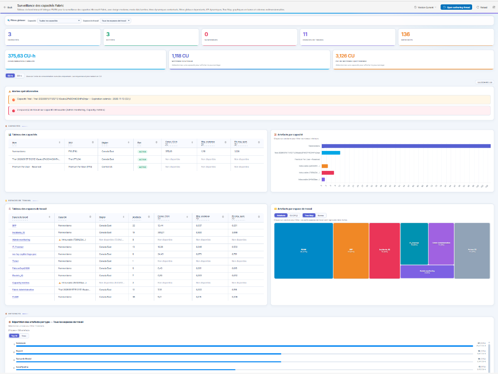

Use case 08Runnable demo · Azure SRE Agent
Microsoft Fabric monitoring
Watch every Fabric capacity and explain CU anomalies without changing a thing
Monitors Microsoft Fabric capacities, workspaces, items, and CU consumption through Azure SRE Agent, a bilingual Live Report, and optional historical Power BI analytics
- Azure SRE Agent
- Microsoft Fabric
- Power BI
- Azure Container Apps
- Azure Container Registry

Why it matters
The problem it solves.
Fabric administrators need tenant-wide inventory and CU trends, but native retention windows are short and the data is spread across admin APIs and the Capacity Metrics app. Explaining an anomaly means stitching it together by hand.
One view of the tenant
Capacities, workspaces, items and CU consumption in a bilingual Live Report and optional Power BI reports.
History past native retention
A daily pipeline keeps at least 60 days of history in a Lakehouse, beyond the 14 days in Capacity Metrics.
Anomalies explained
The agent states impact, evidence, likely cause and confidence, and separates observations from hypotheses.
Read-only by default
Write actions are disabled. Each one needs explicit opt-in, a matching approval and an audit record.
How it works
From trigger to approved change.
The same operating model as every use case in the showcase, applied to Microsoft Fabric monitoring.
Trigger
A question to the agent, a scheduled routine or the daily collection
Analyze
Reads admin inventory and CU metrics, then compares them with history
Approve
Any opted-in action waits for an approval matching the exact plan
Apply
The action runs once after revalidation and is written to the audit table
See it in action
One run, start to finish.
Azure SRE Agent does the analysis and prepares the change. You decide.
Fictional sample run with Contoso data. Try Approve or Reject.
Safety
Built to keep people in control.
Read-only by design
- The Fabric Admin MCP server exposes only read tools behind an API key
- The read identity gets only read-only admin APIs
approvals.allowedActionsis empty in the example configuration
A human decides
- Each action needs a plan with impact and rollback, and an approval ID that matches it
- Approvals expire, and any change to the plan invalidates them
- Every approved action is written to
agent_action_audit
- read-only-by-default
- evidence-first
- humans-approve-changes
- synthetic-data-only
Is it for you?
Who it helps and what it takes.
Who it's for
- Fabric administrators
- Platform and SRE engineers
- Power BI report owners
What you need
- An Azure SRE Agent connected to a Fabric MCP server
- Read access to the Fabric resources to observe
- Fabric admin consent for read-only admin APIs, for Basic and Advanced
- An existing Fabric F or P capacity, for Advanced
The value
Provides proactive, read-only operational visibility and guided investigation while keeping every write action behind explicit approval and audit controls
Ready to try Microsoft Fabric monitoring?
The guide covers prerequisites, setup, safety and cleanup step by step.